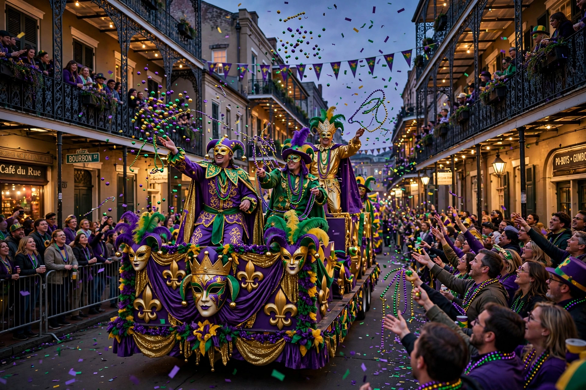

Mardi Gras in New Orleans is the city's celebration of the Carnival season, culminating on Mardi Gras (Fat Tuesday), the day before Ash Wednesday. It is famous for parades organised by krewes, masked balls, throws of beads and doubloons, and king cakes.

| Location | New Orleans, Louisiana |
|---|---|
| Season | Twelfth Night to Fat Tuesday |
| Colours | Purple, green, gold |
French colonial settlers brought Carnival traditions; organised parades began in the 19th century with the Mistick Krewe of Comus (1857). Rex (1872) established the purple, green, and gold colours and the king of Carnival. Zulu, founded by Black New Orleanians, parades on Mardi Gras morning.
Major parades include Endymion, Bacchus, Orpheus, Rex, and Zulu. Celebrations were curtailed in 2021 during COVID-19, when residents decorated houses as "house floats".